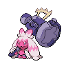

デカヌチャンのデータ
基本ステータス
もちもの・メダル・条件付き効果なし。割合の値は％です。待ち時間は短縮率、移動速度はゲーム内の値です。
| Lv | HP | 攻撃 | 防御 | 特攻 | 特防 | 移動速度 | 急所率 | 待ち時間 | HP吸収率 | 通常攻撃の速さ | 貫通 |
|---|---|---|---|---|---|---|---|---|---|---|---|
| 1 | 3250 | 100 | 60 | 20 | 80 | 3700 | 0 | 0 | 0 | 10 | 0 |
| 2 | 3324 | 105 | 64 | 21 | 85 | 3700 | 0 | 0 | 0 | 10.29 | 0 |
| 3 | 3412 | 111 | 69 | 23 | 91 | 3700 | 0 | 0 | 0 | 10.63 | 0 |
| 4 | 3518 | 118 | 75 | 25 | 98 | 3700 | 0 | 0 | 0 | 11.04 | 0 |
| 5 | 3903 | 145 | 95 | 32 | 124 | 3850 | 0 | 0 | 5 | 12.54 | 0 |
| 6 | 4057 | 156 | 103 | 35 | 134 | 3850 | 0 | 0 | 5 | 13.14 | 0 |
| 7 | 4756 | 205 | 139 | 48 | 182 | 4000 | 0 | 0 | 5 | 15.86 | 0 |
| 8 | 4997 | 220 | 151 | 52 | 197 | 4000 | 0 | 0 | 5 | 16.72 | 0 |
| 9 | 5242 | 239 | 165 | 57 | 215 | 4150 | 0 | 0 | 10 | 17.75 | 0 |
| 10 | 5560 | 261 | 182 | 63 | 237 | 4150 | 0 | 0 | 10 | 18.98 | 0 |
| 11 | 5942 | 288 | 202 | 70 | 263 | 4300 | 0 | 0 | 10 | 20.46 | 0 |
| 12 | 6400 | 320 | 226 | 78 | 294 | 4300 | 0 | 0 | 10 | 22.24 | 0 |
| 13 | 6950 | 359 | 255 | 88 | 331 | 4300 | 0 | 0 | 15 | 24.37 | 0 |
| 14 | 7609 | 405 | 289 | 100 | 376 | 4300 | 0 | 0 | 15 | 26.93 | 0 |
| 15 | 8400 | 460 | 330 | 115 | 430 | 4300 | 0 | 0 | 15 | 30 | 0 |

デカヌチャン急所・HP吸収などの仕様
強化されていない通常攻撃だけが急所の対象です。強化攻撃と、どろぼうで強化した通常攻撃は急所になりません。 基本の急所率は全レベル0%です。
通常攻撃
効果・条件の説明
12秒ごとに、周囲をハンマーで払う強化攻撃が使用可能になります。命中すると自分の減少HPの24%を回復し、強化攻撃は使うまで保持されます。相手チームのポケモンの通常攻撃を受けると、次の強化攻撃が使えるまでの時間が早く進みます。
わざ1
いわくだき
効果・条件の説明
ハンマーを振り下ろし、範囲内の相手を短時間行動不能にします。
効果・条件
命中した相手を0.15秒間行動不能にします。ハンマーが強くなるほど攻撃範囲が広がります。
デカハンマー
効果・条件の説明
妨害無効になって力をため、ハンマーを振り下ろします。ためている間は移動速度が下がります。
通常版の効果・条件
ため中は移動速度が50%下がります。最大1.95秒間ためられ、1秒で最大ためになります。ためるほどダメージと吹き飛ばす時間が増え、ハンマーが強いほど攻撃範囲も広がります。
効果・条件
ための段階に応じ、吹き飛ばす時間は0.5秒・1秒・1.5秒になります。
デカハンマー+
効果・条件の説明
強化後の変更点：待ち時間が1秒短くなります。
通常版の効果・条件
ため中は移動速度が50%下がります。最大1.95秒間ためられ、1秒で最大ためになります。ためるほどダメージと吹き飛ばす時間が増え、ハンマーが強いほど攻撃範囲も広がります。
効果・条件
ための段階に応じ、吹き飛ばす時間は0.5秒・1秒・1.5秒になります。
うちおとす
効果・条件の説明
力をためてからハンマーで近くを攻撃します。ためている間は移動速度が下がります。
キャンセル時の待ち時間
うちおとすをキャンセルすると待ち時間は2秒になる。
通常版の効果・条件
ため中は移動速度が30%下がります。最大2.4秒間ためられ、0.8秒で最大ためになり、射程とダメージが強まります。着弾した相手の移動速度を3秒間、最初は50%下げ、0.5秒ごとに弱めます。
通常版の効果・条件
ハンマーが強くなるほど、岩を飛ばせる最大距離が伸びます。
うちおとす+
効果・条件の説明
強化後の変更点：待ち時間が1秒短くなります。
キャンセル時の待ち時間
うちおとすをキャンセルすると待ち時間は2秒になる。
通常版の効果・条件
ため中は移動速度が30%下がります。最大2.4秒間ためられ、0.8秒で最大ためになり、射程とダメージが強まります。着弾した相手の移動速度を3秒間、最初は50%下げ、0.5秒ごとに弱めます。
通常版の効果・条件
ハンマーが強くなるほど、岩を飛ばせる最大距離が伸びます。
わざ2
ようせいのかぜ
効果・条件の説明
前方へ妖精の風を起こし、相手にダメージと減速を与えます。
効果・条件
命中した相手の移動速度を1秒間20%下げます。
アイスハンマー
効果・条件の説明
指定場所へ跳び、冷たいハンマーを振り下ろします。
通常版の効果・条件
相手の移動速度を2.5秒間、最初は70%下げ、0.5秒ごとに弱めて最低40%にします。攻撃も2.5秒間30%下げます。
通常版の効果・条件
攻撃と特攻を、どちらも2.5秒間30%下げます。
アイスハンマー+
効果・条件の説明
強化後の変更点：攻撃と特攻を下げる割合が、どちらも50%になります。
通常版の効果・条件
相手の移動速度を2.5秒間、最初は70%下げ、0.5秒ごとに弱めて最低40%にします。攻撃も2.5秒間30%下げます。
通常版の効果・条件
攻撃と特攻を、どちらも2.5秒間30%下げます。
どろぼう
効果・条件の説明
移動速度を上げます。妨害を受けている相手に向かう場合は、上昇量が増えます。
通常版の効果・条件
移動速度が3秒間20%上がり、妨害を受けている相手へ向かうと5秒間40%上昇になります。5秒以内の次の通常攻撃が強化され、命中1匹につき自分の防御と特防が5秒間10%上がり、最大5段階50%まで重なります。相手の防御と特防は5秒間10%下がります。再び当てると持続時間を更新します。
どろぼう+
効果・条件の説明
強化後の変更点：強化された通常攻撃で相手の防御・特防を25%下げ、命中した相手1体につき自分の防御・特防を25%上げます。自身の上昇は最大125%です。
通常版の効果・条件
移動速度が3秒間20%上がり、妨害を受けている相手へ向かうと5秒間40%上昇になります。5秒以内の次の通常攻撃が強化され、命中1匹につき自分の防御と特防が5秒間10%上がり、最大5段階50%まで重なります。相手の防御と特防は5秒間10%下がります。再び当てると持続時間を更新します。
ユナイトわざ
ユナイトわざ使用後の共通強化
移動速度30%上昇、わざの待ち時間短縮30%、最大HPの20%のシールド（6秒）
超らぶりー♡ボカーーン！
効果・条件の説明
指定した相手とその近くへキッスを飛ばし、ダメージと行動不能を与えます。
効果・条件
キッスは相手を1.2秒間行動不能にします。再使用するとハンマーで指定場所を攻撃します。共通のユナイト強化は、最初のキッスが命中したときに発生します。